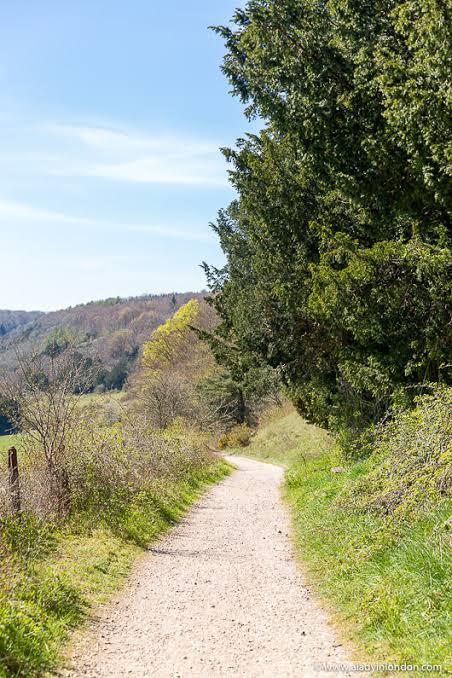

The scenic walk and trail at Fife Farmpark takes visitors through beautiful countryside, with views of the fields, woodland, and nearby hills. Along the route, visitors can spot farm animals, birds, and wildflowers while enjoying the peaceful surroundings. The trail has several benches where people can stop and take in the views, making it a relaxing activity for families and visitors of all ages. It has been a popular feature of the farmpark since it opened in 2003.
